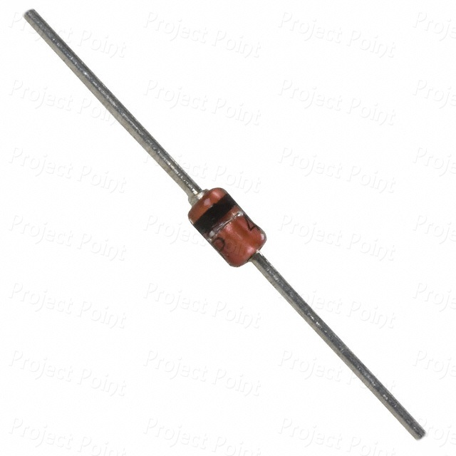

A diode is a semiconductor electronic component that allows current to flow in only one direction while blocking it in the opposite direction. It has two terminals: the anode (positive) and the cathode (negative). When a forward voltage is applied, the diode conducts electricity, while in reverse bias it acts as an insulator. This unique property makes diodes essential for converting alternating current (AC) into direct current (DC), a process called rectification.
Characteristics of a diode:-
1.Anode and Cathode:
Diodes have two terminals: the anode (positive) and the cathode (negative).The anode is the terminal through which conventional current enters the diode. When the anode is at a higher voltage than the cathode (forward-biased condition), the diode allows current to pass through.The cathode is the terminal through which current exits the diode. When the cathode is at a higher voltage than the anode (reverse-biased condition), the diode blocks current flow.
2.Unidirectional Current Flow:
Unidirectional current flow refers to the property of a diode that allows electric current to flow in only one direction while blocking it in the opposite direction. This is the fundamental characteristic of diodes, making them essential for controlling current in electronic circuits.Current flows easily from the anode to the cathode, but not the other way around.
3.Forward Bias:
Forward bias is the condition in which a diode is connected so that it allows current to flow easily through it. In this configuration, the anode is connected to the positive terminal of the power supply, and the cathode is connected to the negative terminal. When a voltage greater than the diode’s threshold or cut-in voltage (usually around 0.7 V for silicon diodes and 0.3 V for germanium diodes) is applied, the diode conducts current with very little resistance.When a positive voltage is applied to the anode and a negative voltage to the cathode, the diode conducts current (low resistance).
4.Reverse Bias:
Reverse bias is the condition in which a diode is connected so that it blocks current flow. In this configuration, the anode is connected to the negative terminal of the power supply, and the cathode is connected to the positive terminal. Under normal conditions, the diode allows very little leakage current to flow, effectively acting as an open circuit.In reverse bias, the applied voltage increases the barrier at the junction, preventing the movement of charge carriers across the diode.When the voltage polarity is reversed, the diode blocks current flow (high resistance).
Common Uses:-
Rectification:
Rectification is the process of Converting AC to DC using diodes or other rectifying devices. Since AC periodically reverses its direction, many electronic devices that require DC cannot operate properly without rectification.
Circuit Protection:
Circuit protection refers to the use of devices and components to safeguard electrical and electronic circuits from damage caused by excessive current, voltage spikes, short circuits, or other abnormal conditions. Diodes, along with fuses, circuit breakers, and varistors, play a key role in protecting circuits.
Signal Modulation and Demodulation:
Modulation is the process of encoding information onto a carrier signal, such as a sine wave, by varying one or more of its properties: amplitude, frequency, or phase. This allows signals, such as voice or data, to be transmitted efficiently over communication channels like radio waves, telephone lines, or optical fibers. Common types include AM (Amplitude Modulation), FM (Frequency Modulation), and PM (Phase Modulation).
Demodulation is the reverse process, where the original information is extracted from the modulated carrier signal at the receiver end. Demodulators detect the variations in the carrier and convert them back into the original message, such as audio, video, or digital data.
Switching:
Switching in electronics refers to the process of turning a circuit or a component on or off, allowing or interrupting the flow of electrical current. Switching is fundamental in controlling the operation of electronic devices and systems, enabling automation, signal routing, and power management.Diodes, transistors, relays, and solid-state devices are commonly used for switching purposes. For example, a diode can act as a unidirectional switch, allowing current to flow in one direction while blocking it in the opposite direction. Diodes can act as switches in circuits.
Types of Diode:-
Junction-Diode
Zener-Diode
Tunnel-Diode
Schottky-Diode
Varactor-Diode
DIAC
TRIAC
SCR
1.Junction-Diode:
A junction diode is a basic type of semiconductor diode formed by joining p-type and n-type semiconductor materials, creating a p–n junction. This junction is the core of the diode and gives it its rectifying property, allowing current to flow in only one direction.
The p-side (anode) contains an excess of holes (positive charge carriers), while the n-side (cathode) contains an excess of electrons (negative charge carriers).When the diode is forward-biased (anode positive with respect to cathode), electrons and holes move toward the junction, allowing current to flow.
2.Zener-Diode:

A Zener diode is a type of semiconductor diode that is designed to allow current to flow in the forward direction like a normal diode, but also in the reverse direction when the voltage exceeds a specific value known as the Zener voltage.This unique property makes Zener diodes ideal for voltage regulation, protection, and reference applications in electronic circuits.
Zener diodes are widely used in power supplies, voltage regulators, surge protectors, and reference voltage circuits. In short, they are essential components for controlling and stabilizing voltage in modern electronic systems.
3.Tunnel-Diode:
A tunnel diode is a type of semiconductor diode known for its ability to operate at very high speeds and exhibit a phenomenon called quantum tunneling. It is created by heavily doping both the p-type and n-type regions, resulting in a very thin depletion region.
This property makes them useful in high-frequency oscillators, amplifiers, microwave devices, and fast switching circuits.
4.Schottky-Diode:
A Schottky diode is a type of semiconductor diode that is characterized by its low forward voltage drop and fast switching speed. Unlike a conventional p–n junction diode, a Schottky diode is formed by the junction of a metal and an n-type semiconductor, creating what is called a metal–semiconductor junction.
This structure allows current to flow easily in the forward direction while blocking it in reverse.Schottky diodes have a typical forward voltage drop of 0.2 to 0.3 V, which is lower than the 0.7 V of silicon diodes, making them more efficient for power-sensitive applications.
5.Varactor-Diode:
A varactor diode (also called a varicap diode) is a type of semiconductor diode designed to act as a variable capacitor when a reverse voltage is applied. Unlike regular diodes that are primarily used for rectification, a varactor diode exploits the change in its depletion region width with applied reverse bias to vary its capacitance.
Varactor diodes are widely used in tuning circuits, frequency modulation (FM) systems, voltage-controlled oscillators (VCOs), and RF filters, where variable capacitance is needed to adjust the frequency of signals electronically without mechanical components.
6.DIAC:
DIACs are commonly used in triggering applications, especially to control triacs in AC power circuits, enabling smooth switching of alternating current loads.
They are widely found in light dimmers, motor speed controllers, and heater regulators, where they help to control AC power efficiently without mechanical switches.
7.TRIAC:
It functions like two SCRs (Silicon Controlled Rectifiers) connected in parallel in opposite directions, allowing it to switch and regulate alternating current in a single device. The three terminals of a TRIAC are: MT1 (Main Terminal 1), MT2 (Main Terminal 2), and Gate (G).
When a small current is applied to the gate terminal, the TRIAC starts conducting between MT1 and MT2, controlling the flow of AC power to the load. Once triggered, it continues to conduct until the current drops below a minimum holding level (usually at the zero crossing of AC).
8.SCR:
An SCR (Silicon Controlled Rectifier) is a four-layer, three-terminal semiconductor device that functions as a controlled rectifier and switch. It is made of alternating layers of p-type and n-type materials (PNPN structure) and has three terminals: Anode (A), Cathode (K), and Gate (G).
The SCR remains in a non-conducting (OFF) state even if a forward voltage is applied between the anode and cathode, as long as no gate current is provided. When a small triggering current is applied to the gate terminal, the SCR switches to the conducting (ON) state, allowing a large current to flow from anode to cathode.
Once turned ON, the SCR stays conducting until the current through it drops below a certain holding current value (usually when AC passes through zero).SCRs are widely used in power control applications such as motor speed control, lamp dimming, controlled rectifiers, overvoltage protection, and AC/DC power switching.
Application:-
Optical Communication Systems: Photodiodes receive light signals in fiber-optic networks, converting them into electrical signals for data transmission.
Light Sensors: Used in automatic streetlights, brightness detection in displays, and ambient light sensing in cameras and smartphones.
Medical Devices: Incorporated in pulse oximeters, imaging devices, and other instruments to detect light intensity.
Safety and Security Systems: Employed in smoke detectors, intruder alarms, and optical barriers for motion detection.
Industrial Automation: Used for position sensing, object detection, and quality control in manufacturing processes.
Solar Energy: Photodiodes in solar panels help measure light intensity and improve efficiency.